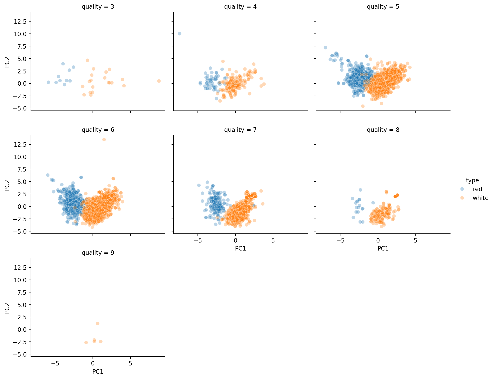

import pandas as pd
import numpy as np
import seaborn as sns
import matplotlib.pyplot as plt
import plotly.express as px
from itables import show
from ind5003 import clust
import folium
import geopandas
from sklearn import decomposition, preprocessing
from sklearn.metrics import pairwise_distances
from sklearn.manifold import MDS, TSNE
from sklearn.ensemble import IsolationForest
from scipy.cluster import hierarchy
from sentence_transformers import SentenceTransformer3 Unsupervised Learning
3.1 Introduction
Suppose that we have a set of \(N\) observations \((x_1, x_2, \ldots, x_N)\) of a random \(p\)-vector \(X\). The goal in unsupervised learning is to infer properties of the probability density of \(X\). Note the primary difference with supervised learning - in that context, we had a set of labels \(y_1,\ldots, y_N\) in addition to the \(x_i\)’s. Here, we do not have labelled data.
In situations where \(x_i\) is vector of 3 or less, then graphical methods and numerical summaries such as correlations will suffice to help us understand the structure of the data. However, these methods breakdown as soon as \(p\) increases beyond 3. This topic introduces techniques that we can use, even when \(p\) is large, to :
- Understand and interpret the main sources of variation in the data,
- Identify “groups” or clusters within the data for further study.
- Visualise high-dimensional data
Example 3.1 (Wine Quality Data)
The UCI Machine Learning Repository contains a dataset on Wine Quality. It consists of two tables - one corresponding to white wine and one corresponding to red wine. Each table contains the following columns:
- fixed acidity
- volatile acidity
- citric acid
- residual sugar
- chlorides
- free sulfur dioxide
- total sulfur dioxide
- density
- pH
- sulphates
- alcohol
- quality (score between 0 and 10)
Columns 1 - 11 are numeric variables, measured objectively on the wines. Column 12 is a subjective evaluation made by wine experts, based on sensory data. Each quality score is the median of at least 3 evaluations. Although this dataset was created for a supervised learning problem, we shall use it to practice unsupervised learning techniques. To do so, we shall ignore the column corresponding to quality in most sections until the end, when we try to interpret the findings.
Our first step is to read in the two tables and combine them into one.
wine_red = pd.read_csv("data/wine+quality/winequality-red.csv",
delimiter=";" )
wine_red['type'] = "red"
wine_white = pd.read_csv("data/wine+quality/winequality-white.csv",
delimiter=";")
wine_white['type'] = "white"
# remove spaces in column names:
col_names = ['fixed_acidity', 'volatile_acidity', 'citric_acid', 'residual_sugar',
'chlorides', 'free_sulfur_dioxide', 'total_sulfur_dioxide',
'density', 'pH', 'sulphates', 'alcohol', 'quality', 'type']
wine2 = pd.concat([wine_red, wine_white], ignore_index=True)
wine2.columns = col_namesHere is a brief overview of the data.
| fixed_acidity | volatile_acidity | citric_acid | residual_sugar | chlorides | free_sulfur_dioxide | total_sulfur_dioxide | density | pH | sulphates | alcohol | quality | type |
|---|---|---|---|---|---|---|---|---|---|---|---|---|
| Loading ITables v2.3.0 from the internet... (need help?) |
3.2 Principal Components Analysis
A Principal Components Analysis (PCA) explains the covariance matrix of a set of variables through a few linear combinations of these variables. The general objectives are
- data reduction, into features that are uncorrelated with one another,
- interpretation, and
- visualisation.
Formal Set-up
Suppose that we have \(N\) observations of a random vector of length \(p\). We can represent these values in a matrix with \(N\) rows and \(p\) columns:
\[ \mathbf{X}_{N\times p} = \begin{bmatrix} x_{1,1} & x_{1,2} & \ldots & x_{1,p}\\ \cdots & \cdots & \cdots & \cdots \\ x_{N,1} & x_{N,2} & \ldots & x_{N,p} \end{bmatrix} \]
Let \(\mathbf{x}_j = \begin{bmatrix} x_{1,j} & x_{2,j} & \cdots & x_{N,j} \end{bmatrix}^T\) correspond to column \(j\) in \(\mathbf{X}\), for \(j=1,\ldots,p\). We represent the mean of column \(j\) with
\[ \bar{x}_j = \frac{1}{N} \sum_{i=1}^N x_{i,j} \]
The first step in a PCA is to compute the covariance matrix of the data:
\[ S_{p\times p} = \begin{bmatrix} s^2_1 & s^2_{1,2} & \ldots & s^2_{1,p}\\ \cdots & \cdots & \cdots & \cdots \\ s^2_{p,1} & s^2_{p,2} & \ldots & s^2_p \end{bmatrix} \]
where \(s^2_{m,n} = \frac{1}{N-1} \sum_{k=1}^N (x_{k,m} - \bar{x}_m)(x_{k,n} - \bar{x}_n)\) is the sample covariance between columns \(m\) and \(n\) of matrix \(X\), where \(1 < m,n < p\). A PCA analysis yields coefficients \(a_i\) such that:
\[ \mathbf{y}_i = a_{i,1} \mathbf{x}_1 + a_{i,2} \mathbf{x}_2 + \cdots + a_{i,p} \mathbf{x}_p, \quad i = 1,\ldots,p \]
In other words, \(\mathbf{y}_i\) is a column vector of length \(N\), formed from a linear combinations of the columns in the original \(\mathbf{X}\) matrix. Each \(\mathbf{y}_i\) is what we refer to as a principal component. From a symmetric \(p \times p\) matrix, we can always compute \(p\) principal components, and these vectors will be uncorrelated with each other.
Note
However this does not help us much! We have not achieved any reduction!?
The value of PCA comes from the possibility that the first few principal components usually explain most of the variability in the data (\(\sum_i^p s^2_i\)). The last few principal components typically explain little of the variability in the data. Indeed, there is some loss of information when we drop them, but the benefit is that we can (hopefully) focus on much fewer dimensions than the original \(p\) (which could be in the hundreds, even). Moreover, as these components will be uncorrelated by design, they can be used as features to solve any issues of multicollinearity in our data.
Example 3.2 (Example: PCA on Wine Dataset)
While it is possible to extract principal components using either the covariance matrix or the correlation matrix, using the latter avoids situations where the primary principal component is simply driven by the scale of one or more columns in the original dataset. Here, we scale the first 11 columns (exclude quality and type) so that each column has mean 0 and variance 1.
It is theoretically possible to extract 11 components from this \(X\) matrix. Let us proceed with that, and assess how many we should keep using a scree plot.
PCA(n_components=11)In a Jupyter environment, please rerun this cell to show the HTML representation or trust the notebook.
On GitHub, the HTML representation is unable to render, please try loading this page with nbviewer.org.
Parameters
| n_components | 11 | |
| copy | True | |
| whiten | False | |
| svd_solver | 'auto' | |
| tol | 0.0 | |
| iterated_power | 'auto' | |
| n_oversamples | 10 | |
| power_iteration_normalizer | 'auto' | |
| random_state | None |
A scree plots the variance explained by each subsequent principal component (on the \(y\)-axis) versus the order of the principal component. It indicates how much more value there is in including the subsequent principal component. Generally, we look for an “elbow” shape to inform us of how many to keep. From below, we would probably want to retain 4 or 5 principal components.
PC_values = np.arange(pca_full.n_components_) + 1
plt.plot(PC_values, pca_full.explained_variance_ratio_, 'o-', linewidth=2, color='blue')
plt.title('Scree Plot')
plt.xlabel('Principal Component')
plt.ylabel('Variance Explained');To find the amount of total variance explained, we can use the following command:
array([0.2754426 , 0.50215406, 0.64364015, 0.73187216, 0.79731533,
0.85252548, 0.90008537, 0.94567722, 0.97631577, 0.99701538,
1. ])It appears that 5 components are enough to explain 79.7% of the variance. Let us try to take a look at the \(a_{i,j}\) coefficients matrix to interpret the principal components. This set of coefficients is also known as the loadings matrix.
In social sciences especially, it is a convention to drop loadings that are smaller than 0.3 in absolute value and then to interpret the remaining coefficients as well as possible.
loading_matrix2 = loading_matrix.copy()
loading_matrix2[loading_matrix.abs() < 0.300] = 0.00
loading_matrix2.round(3).style.background_gradient(cmap='coolwarm_r',
vmin=-1, vmax=1)| PC1 | PC2 | PC3 | PC4 | PC5 | |
|---|---|---|---|---|---|
| fixed_acidity | -0.416000 | 0.531000 | 0.542000 | 0.000000 | 0.000000 |
| volatile_acidity | -0.663000 | 0.000000 | -0.383000 | 0.000000 | 0.000000 |
| citric_acid | 0.000000 | 0.000000 | 0.737000 | 0.000000 | 0.000000 |
| residual_sugar | 0.602000 | 0.521000 | 0.000000 | 0.000000 | 0.000000 |
| chlorides | -0.505000 | 0.498000 | 0.000000 | 0.000000 | 0.521000 |
| free_sulfur_dioxide | 0.750000 | 0.000000 | 0.000000 | 0.352000 | 0.000000 |
| total_sulfur_dioxide | 0.848000 | 0.000000 | 0.000000 | 0.000000 | 0.000000 |
| density | 0.000000 | 0.922000 | 0.000000 | 0.000000 | 0.000000 |
| pH | -0.381000 | 0.000000 | -0.568000 | 0.408000 | -0.385000 |
| sulphates | -0.512000 | 0.303000 | 0.000000 | 0.631000 | 0.000000 |
| alcohol | 0.000000 | -0.734000 | 0.326000 | 0.000000 | 0.000000 |
From above, if we focus on the top two principal components, we could interpret them as:
- A combination of sugar and sulphur dioxides contrasted against acidity, chlorides and sulphates.
- A contrast between density and alcohol.
In the following code, we apply the transformation to obtain the actual principal components (\(\mathbf{y}_j\)’s).
X_transformed = pca.transform(X_scaled)
X_transformed_df = pd.DataFrame(X_transformed,
columns=['PC1', 'PC2', 'PC3', 'PC4', 'PC5'])
X_transformed_df[['quality', 'type']] = wine2[['quality', 'type']]
sns.relplot(data=X_transformed_df, x='PC1', y='PC2', col='quality', col_wrap= 3,
hue='type', marker='o', alpha=0.3, height=3, aspect=1.2);
Judging from the plots, red wines tend to be lower on PC1. Can we tie this back to the columns in the data to understand the difference between white and red wines more?
For white wines, there seems to be a linear relation between PC1 and PC2. However, for red wines, the range of PC1 values is quite narrow, and the PC1 values do not appear to suggest what the PC2 values could be.
Finally, neither PC1 nor PC2 appears to provide a clue on the the subjective quality of the wine.
3.3 Clustering
In the previous section, the goal was to reduce the dimensionality of the dataset. In this section, our goal is to segment the data. By assigning individual observations into groups (or clusters) such that those within each group are “closely related”, we can gain an understanding of our data at a higher level.
There are many different clustering algorithms. You may have heard of K-means, a very popular one before. The one we are going to use here is very similar to it. It is known as agglomerative hierarchical clustering. Let’s take a look at how it works first.
Hierarchical Clustering
Dissimilarity Measures Between Individual Observations
As we mentioned earlier, cluster analysis tries to identify groups such that those within a group a “similar” to one another. In order to proceed, we need to formalise this idea of similarity/dissimilarity.
As before, suppose that we have \(N\) observations \(x_1, x_2, x_3,\ldots,x_N\) and we wish to group them into \(K\) clusters. Each observation is typically a vector of \(p\) observations, so we may write \(x_i = (x_{i,1}, x_{i,2}, \ldots, x_{i,N})\).
Most clustering algorithms require a dissimilarity matrix as input, so we need function that can measure pairwise dissimilarity. One of the most common choices is the Euclidean distance (or rather the L2-norm) between \(x_i\) and \(x_j\):
\[\begin{equation*} d(x_i,\;x_j) = \sqrt{ \sum_{s=1}^p (x_{i,s} - x_{j,s})^2 } \end{equation*}\]
Another common choice is the \(L1\)-norm:
\[\begin{equation*} d(x_i,\;x_j) = \sum_{s=1}^p |x_{i,s} - x_{j,s}| \end{equation*}\]
Dissimilarity Measures Between Clusters or Groups
For hierarchical clustering, we need to build on this choice of pairwise dissimilarity to obtain a measure of dissimilarity between groups. In other words, suppose we have two groups of points \(G\) and \(H\), with \(N_G\) and \(N_H\) points within them respectively. We wish to use the pairwise dissimilarity between points in \(G\) and \(H\), to compute a dissimilarity between \(G\) and \(H\). We call this the linkage method, and there are several options for this too:
- Single linkage takes the intergroup dissimilarity to be that of the closest (least dissimilar) pair. \[\begin{equation*} d_S(G,H) = \min_{i \in G, j \in H} d(x_i,\, x_j) \end{equation*}\]
- Complete linkage takes the intergroup dissimilarity to be that of the furthest (most dissimilar) pair. \[\begin{equation*} d_C(G,H) = \max_{i \in G, j \in H} d(x_i,\, x_j) \end{equation*}\]
- Average linkage utilises the average of all pairwise dissimilarities between the groups: \[\begin{equation*} d_A(G,H) = \frac{1}{N_G N_H} \sum_{i \in G} \sum_{j \in H} d(x_i,x_j) \end{equation*}\]
- Ward linkage uses a more complicated distance to minimise the variance within groups. It usually returns more compact clusters than the others. Suppose that group \(G\) was formed by merging groups \(G_1\) and \(G_2\). Then the Ward distance between groups is \[\begin{equation*} d_W(G,H) = \sqrt{\frac{|H| + |G_1|}{N_G + N_H}d_W(H,G_1)^2 + \frac{|H| + |G_2|}{N_G + N_H}d_W(H,G_2)^2 + \frac{H}{N_G +N_H}d_W(G_1,G_2)^2} \end{equation*}\]
The choice of linkage can affect the final clusters we obtain, so it is important to choose carefully based on the subject matter. Here is a plot from sklearn, demonstrating the impact of the linkage on the clusters in toy datasets.
Agglomerative Hierarchical Clustering Algorithm
The output of the algorithm is a hierarchical representation of the data, where clusters at each level of the hierarchy are created by merging clusters at the next lower level. At the lowest level, each cluster contains a single observation. At the highest level there is only one cluster containing all of the data.
Starting at the bottom (with \(N\) clusters of singletons), we recursively merge a selected pair of clusters into a single cluster. This produces a grouping at the next higher level with one less cluster. The pair chosen for merging consist of the two groups with the smallest intergroup dissimilarity.
As you can tell, this algorithm does not require the number of clusters as an input. The final number of clusters can be based on a visualisation of this hierarchy of clusterings, through a dendrogram.
X = np.array([[.25,.7], [.3, .8], [.7, .6]])
fc_dict={'Stage 0': ['red', 'blue', 'green'], 'Stage 1':['red', 'red', 'green'],
'Stage 2':['red']*3}
plt.figure(figsize=(10, 3))
for x,y in enumerate(fc_dict.items()):
plt.subplot(1,3,x+1);
plt.scatter(X[:,0], X[:,1], facecolor=y[1]);
plt.ylim(0.2,1); plt.xlim(0,1);
plt.title(y[0]);As we can see the number of clusters changed from 3 to 2 and then to 1. Here is how we can visualise the hierarchy:
The dendrogram shows that points with index 0 and 1 (the closest two points) merge at a small vertical distance (height of green lines), but the group containing them merges with point 2 at a much higher vertical distance (blue line on the left). This shows that points 0 and 1 are less dissimilar to one another than they are (as a group) to point 2. In other words, the height of each node is proportional to the value of the intergroup dissimilarity between its two child nodes.
Example 3.3 (Example: Hierarchical Clustering of Wine)
Now we apply this technique to the scaled wine dataset.
From the dendrogram alone, it appears plausible that we can break the original set of data points into two, maybe 3, groups.
Note
Can we come up with a formal method of determining the optimal number of clusters?
Determining the optimal number of clusters
The Silhouette coefficient summarises the within similarity to the between similarity using the following formula:
\[\begin{equation*} S = \frac{b-a}{\max(a,b)} \end{equation*}\]
where \(b\) is the average distance between an observation and a cluster that it is not a part of. On the other hand, \(a\) is the mean distance within a cluster. This coefficient takes values between -1 and 1, with values closer to 1 indicating a more optimal clustering.
Example 3.4 (Example: Clustering Quality)
Here are the silhouette scores from the two clusterings of the wine data.
The silhouette coefficient values we are obtaining are not very good. However, out of the possible values we tried, \(K=2\) seems to be the best.
out = hierarchy.cut_tree(hc1, n_clusters=2).ravel()
X_transformed_df['groups'] = out
sns.relplot(data=X_transformed_df, x='PC1', y='PC2', col='groups',
hue='type', marker='o', alpha=0.3, height=3, aspect=1.2);As we can see, the groupings closely mirror the type of wine (red or white).
| count | unique | top | freq | |
|---|---|---|---|---|
| groups | ||||
| 0 | 1684 | 2 | red | 1549 |
| 1 | 4813 | 2 | white | 4763 |
However, notice that there are a number of white wines grouped as 0 (with most of the other reds). It would be interesting to study what qualities of these wines led to them being grouped with the reds.
Also, consider what value the PCA brought to this problem. Go back and re-run the clustering algorithm with the scaled but untransformed data. Does the quality of clustering differ?
3.4 Outlier Detection
One efficient way of performing outlier detection in high-dimensional datasets is to use random forests. The ensemble.IsolationForest object in sklearn “isolates” observations by:
- Randomly selecting features, and then randomly selecting a split value between the maximum and minimum values of the selected feature to form a decision tree.
- In each tree, the number of splittings required to isolate a sample is equivalent to the path length from the root node to the terminating node.
- Repeating step 1 to create a forest of trees.
For each observation, the average path length, over the forest of random trees, is a measure of how anomalous it is. Random partitioning produces noticeably shorter paths for anomalies. Hence, when a forest of random trees collectively produce shorter path lengths for particular samples, they are highly likely to be anomalies.
Example 3.5 (Example: Isolation Forest with Taiwan Dataset)
Let us apply this technique to the Taiwan real estate dataset from the regression topic.
After reading in and scaling the data, we fit the IsolationForest estimator.
clf = IsolationForest(max_samples=300, max_features=2, contamination=0.01,
random_state=503)
clf.fit(X_re_scaled)IsolationForest(contamination=0.01, max_features=2, max_samples=300,
random_state=503)In a Jupyter environment, please rerun this cell to show the HTML representation or trust the notebook. On GitHub, the HTML representation is unable to render, please try loading this page with nbviewer.org.
Parameters
| n_estimators | 100 | |
| max_samples | 300 | |
| contamination | 0.01 | |
| max_features | 2 | |
| bootstrap | False | |
| n_jobs | None | |
| random_state | 503 | |
| verbose | 0 | |
| warm_start | False |
The contamination factor is the proportion of outliers in the dataset. max_features corresponds to the number of features to be drawn for each base estimator, while max_samples is the number of samples (observations) to draw from the original dataset for each base estimator.
1 409
-1 5
Name: count, dtype: int64There are 5 points that have been identified as outliers (coded as -1). As analysts, we should do our best to understand what property, or combination of features, led to this.
show(re2[['house_age', 'dist_MRT', 'num_stores', 'price',
'Xs', 'Ys']].groupby(re2.outliers).describe().T)| outliers | -1 | 1 | |
|---|---|---|---|
| Loading ITables v2.3.0 from the internet... (need help?) |
Here is the same map of the data points, but with colours to code the outlier points.
m = folium.Map(location=(45.5236, -122.6750))
gdf = geopandas.GeoDataFrame(
re2, geometry=geopandas.points_from_xy(re2.X, re2.Y), crs="EPSG:3825"
)
gdf.explore("outliers", tiles="CartoDB positron",
tooltip="outliers", marker_type="circle",
marker_kwds = {"radius": 50, "fill": True},
legend_kwds = {"caption": "Price"})Make this Notebook Trusted to load map: File -> Trust Notebook
Note
If we drop the location parameters, would different points be identified as outliers?
3.5 Visualisation
MDS
Multidimensional Scaling is another technique for visualising high-dimensional data. Just like in hierarchical clustering, we begin with a square matrix consisting of all pairwise dissimilarities \(d(x_i,x_j)\) between our \(N\) high-dimensional vectors. With a choice of \(k\), we seek values \(z_1, z_2, \ldots, z_N \in \mathbb{R}^k\) such that the following function is minimised:
\[ S(z_1,\ldots,z_N) = \left[ \sum_{i \ne j} \left( d(x_i,x_j) - ||z_i - z_j||\right)^2 \right]^{1/2} \]
MDS is not the same as Principal Component Analysis (PCA):
- PCA maximises variance, orthogonal to earlier components.
- Principal components are ordered; MDS are not.
- Principal components are linear combinations of the original vectors; MDS output is not.
The goal of MDS is to find a lower dimensional set of vectors whose pairwise Euclidean distances are as close as possible to the dissimilarity matrix of the original vectors.
Example 3.6 (Example: MDS on Disease Symptoms)
The dataset disease.csv contains a list of symptoms that were reported for a set diseases. Each row in the dataframe corresponds to a particular disease, while each binary column indicates whether that particular symptom was frequently present for this disease.
| itching | skin_rash | nodal_skin_eruptions | dischromic_patches | continuous_sneezing | shivering | chills | watering_from_eyes | stomach_pain | acidity | ulcers_on_tongue | vomiting | cough | chest_pain | yellowish_skin | nausea | loss_of_appetite | abdominal_pain | yellowing_of_eyes | burning_micturition | spotting_urination | passage_of_gases | internal_itching | indigestion | muscle_wasting | patches_in_throat | high_fever | extra_marital_contacts | fatigue | weight_loss | restlessness | lethargy | irregular_sugar_level | blurred_and_distorted_vision | obesity | excessive_hunger | increased_appetite | polyuria | sunken_eyes | dehydration | diarrhoea | breathlessness | family_history | mucoid_sputum | headache | dizziness | loss_of_balance | lack_of_concentration | stiff_neck | depression | irritability | visual_disturbances | back_pain | weakness_in_limbs | neck_pain | weakness_of_one_body_side | altered_sensorium | dark_urine | sweating | muscle_pain | mild_fever | swelled_lymph_nodes | malaise | red_spots_over_body | joint_pain | pain_behind_the_eyes | constipation | toxic_look_(typhos) | belly_pain | yellow_urine | receiving_blood_transfusion | receiving_unsterile_injections | coma | stomach_bleeding | acute_liver_failure | swelling_of_stomach | distention_of_abdomen | history_of_alcohol_consumption | fluid_overload | phlegm | blood_in_sputum | throat_irritation | redness_of_eyes | sinus_pressure | runny_nose | congestion | loss_of_smell | fast_heart_rate | rusty_sputum | pain_during_bowel_movements | pain_in_anal_region | bloody_stool | irritation_in_anus | cramps | bruising | swollen_legs | swollen_blood_vessels | prominent_veins_on_calf | weight_gain | cold_hands_and_feets | mood_swings | puffy_face_and_eyes | enlarged_thyroid | brittle_nails | swollen_extremeties | abnormal_menstruation | muscle_weakness | anxiety | slurred_speech | palpitations | drying_and_tingling_lips | knee_pain | hip_joint_pain | swelling_joints | painful_walking | movement_stiffness | spinning_movements | unsteadiness | pus_filled_pimples | blackheads | scurring | bladder_discomfort | foul_smell_of_urine | continuous_feel_of_urine | skin_peeling | silver_like_dusting | small_dents_in_nails | inflammatory_nails | blister | red_sore_around_nose | yellow_crust_ooze | disease |
|---|---|---|---|---|---|---|---|---|---|---|---|---|---|---|---|---|---|---|---|---|---|---|---|---|---|---|---|---|---|---|---|---|---|---|---|---|---|---|---|---|---|---|---|---|---|---|---|---|---|---|---|---|---|---|---|---|---|---|---|---|---|---|---|---|---|---|---|---|---|---|---|---|---|---|---|---|---|---|---|---|---|---|---|---|---|---|---|---|---|---|---|---|---|---|---|---|---|---|---|---|---|---|---|---|---|---|---|---|---|---|---|---|---|---|---|---|---|---|---|---|---|---|---|---|---|---|---|---|---|---|---|
| Loading ITables v2.3.0 from the internet... (need help?) |
Our goal is to visualise the 41 diseases - diseases with “similar” symptoms should be plotted “close” to one another. However, the data begets the natural question: How can we define dissimilarity between the symptom lists of two diseases?
For this purpose, we shall use the Jaccard similarity index. For two disease symptom sets \(A\) and \(B\), the Jaccard dissimilarity is defined to be
\[ J = 1 - \frac{|A \cap B}{|A \cup B|} \]
If there are no common symptoms between the two diseases, then the intersection between the two sets would be the empty set. In that situation, \(J\) would take on the maximum value of 1. If the two symptom lists are identical, then \(J\) takes on the smallest possible value of 0.
disease_names = disease.disease.to_list()
symptoms = disease.columns.to_list()[:-1]
X = disease.iloc[:, 0:-1].to_numpy()
symptom_text = []
for i in range(0, X.shape[0]):
symptom_text.append(','.join([symptoms[x] for x in np.where(X[i] == 1)[0]]))
disease['symptom_text'] = symptom_text
# pdist2 is 41x41
pdist2 = pairwise_distances(X!=0, metric='jaccard')
disease.loc[disease.disease.isin(['GERD', 'Heart attack']), 'symptom_text'].to_list()['stomach_pain,acidity,ulcers_on_tongue,vomiting,cough,chest_pain',
'vomiting,chest_pain,breathlessness,sweating']Based on the set of symptoms for GERD and Heart attack, we have the following calculation:
\[ J = 1 - \frac{2}{8} = 0.75 \]
Now we turn to the MDS transformation.
embedding = MDS(n_components=2, normalized_stress='auto', dissimilarity='precomputed',
random_state=42, max_iter=500, verbose=0)
X_transformed = embedding.fit_transform(pdist2)
X_transformed_df = pd.DataFrame(X_transformed, columns=['X', 'Y'])
X_transformed_df['disease'] = disease_names
fig = px.scatter(X_transformed_df, x='X', y='Y', text='disease', hover_name=symptom_text,
width=1024, height=960)
fig.update_traces(textposition='top center')
#fig.show()/home/viknesh/NUS/coursesTaught/ind5003-book/env/lib/python3.10/site-packages/sklearn/manifold/_mds.py:677: FutureWarning:
The default value of `n_init` will change from 4 to 1 in 1.9.
To verify if the plot makes intuitive sense, we should inspect the points that occur nearby to one another. Here are some example codes we can use:
disease.loc[disease.disease.isin(['Typhoid', 'Dengue', 'Malaria']),
'symptom_text'].to_list()
# disease.loc[disease.disease.isin(['Common Cold', 'Pneumonia', 'Bronchial asthma']),
# 'symptom_text'].to_list()
# disease.loc[disease.disease.isin(['GERD', 'Heart attack', 'Drug reaction']),
# 'symptom_text'].to_list()['chills,vomiting,nausea,high_fever,diarrhoea,headache,sweating,muscle_pain',
'skin_rash,chills,vomiting,nausea,loss_of_appetite,high_fever,fatigue,headache,back_pain,muscle_pain,malaise,red_spots_over_body,joint_pain,pain_behind_the_eyes',
'chills,vomiting,nausea,abdominal_pain,high_fever,fatigue,diarrhoea,headache,constipation,toxic_look_(typhos),belly_pain']It is important to remember that above, we requested the MDS algorithm to return us \(z\)-coordinates in \(\mathbf{R}^2\) - two-dimensional Euclidean space, that replicate the dissimilarity matrix from the higher-dimensional data. This was for convenience, since the two dimensional plane is easier to plot. One problem is that, due to information loss, it is possible that in 2D, two points appear near, but in fact, they may be far apart on a third dimension.
With plotly, we can make interactive 3d plots, which can go some way to alleviating this problem.
Warning
Stay away from non-interactive 3d plots!
Example 3.7 (Example: Disease Symptoms 3D-plot)
Here is the 3-D version of the earlier plot:
embedding3 = MDS(n_components=3, normalized_stress='auto', dissimilarity='precomputed',
random_state=42, max_iter=500, verbose=0)
X_transformed3 = embedding3.fit_transform(pdist2)
X_transformed3_df = pd.DataFrame(X_transformed3, columns=['X', 'Y', 'Z'])
X_transformed3_df['disease'] = disease_names
fig = px.scatter_3d(X_transformed3_df, x='X', y='Y', z='Z', text='disease',
width=1024, height=960)
fig.show()/home/viknesh/NUS/coursesTaught/ind5003-book/env/lib/python3.10/site-packages/sklearn/manifold/_mds.py:677: FutureWarning:
The default value of `n_init` will change from 4 to 1 in 1.9.
t-SNE
t-SNE is an fast, iterative algorithm for visualising high-dimensional data.
Once again, suppose we have \(N\) data points \(x_i \in \mathbf{R}^p\). We would like to choose \(N\) map points \(y_i \in \mathbf{R}^2\) to represent them. Here is how the algorithm works:
- Compute pairwise similarity between the data points, using a Gaussian (Normal) kernel.
- Iteratively update map points so that their pairwise similarity is as close as possible to the original data points.
The innovation of these algorithm is that the similarity between map points is computed using a \(t\)-distribution instead of Gaussian. The \(t\)-distribution has fatter tails than the Normal. This ensures that data points that are not close in \(\mathbf{R}^D\) are pushed apart in the map points space.
There are a couple of important parameters in this algorithm.
- Perplexity: This is a parameter that provides a guide on how many neighbours a point has. It is recommended to try different values between 5 and 50 and assess if results are meaningful and consistent.
- Number of iterations: This is the number of adjustments to make to the map points before stopping. The difference between map point similarity and data point similarity is measured using Kullback-Leibler Divergence. When this no longer drops quickly, we can stop the t-SNE algorithm.
Although you will find t-SNE used in many analyses, you should be aware of certain caveats when using it. Please take a look at the link in the references for plots that expound on the following points.
- t-SNE is for visualisation and exploration, not for clustering.
- Distances in the map space are not reflective of true distances between datapoints.
- t-SNE preserves small pairwise distances so that local relationships are preserved.
- In the map space, distances between clusters (between far-away points) might not mean much (unlike MDS).
- Make sure you try with different perplexity values, and check that the algorithm has converged.
Example 3.8 (Example: Twitter Dataset)
The UCI Machine Learning repository contains tweets pertaining to health news from more than 15 major news agencies in 2015. In this example, we are going to encode each BBC tweet in to a numerical vector of length 384. Then we are going to visualise it using t-SNE.
Above, we have an example of a tweet. We are going to strip off the URL at the end before encoding each (short) sentence.
Example 3.9 (Example: Twitter Dataset t-SNE Output)
The following code generates an interactive plot based on the t-SNE visualisation.
The plot is only visible in the HTML version of the textbook.
3.6 References
Website references
- Clustering performance evaluation There are many other ways of assessing what the optimal number of clusters should be.
- More information on isolation forests
- Wikipedia entry on Jaccard Similarity (or index): This page introduces variants of the index, which may be relevant when one has counts of the number of times each item appears in the set.
- Caveats when using t-SNE
- DataCamp on t-SNE: This tutorial consists of a worked-through example on a churn dataset. It includes a comparison with PCA.
Video references
- t-SNE, explained by Josh Starmer
- A general video on high-dimensional space: A nice explainer from Google.